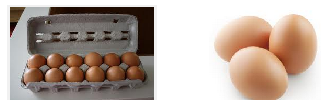

Section 1.1 Halves and Quarters
Subsection 1.1.1 One-Half
The most familiar fraction is \(\large{\blert{\text{one-half}}}~~~\text{,}\) or \(\large{\blert{\dfrac{1}{2}}}.\)

To find one-half of something, we divide it into \(\large{\blert{2}}~\blert{\text{equal}}~~\) pieces and take \(\large{\blert{1}}\) of them.
If we have a group of objects, we separate them into \(\large{\blert{2}}~~\blert{\text{equal}}~~\) groups and take \(\large{\blert{1}}\) group. Each group is a part of the whole. We write this as a fraction like this:
Example 1.1.1.
-
\({\dfrac{1}{2}}\) of a dozen eggs (12 eggs) \(=\) 6 eggs
\(~~~~~~~~~~~~~~~~~~\blert{\text{A whole dozen is 12 eggs.}~~~~~~~~~~~~\text{Our part is 6 eggs:} ~~\dfrac{6}{12}}\) \begin{equation*} \frac{\text{part}}{\text{whole}} = \large{\dfrac{6}{12}} = \large{\dfrac{1}{2}}~~~~~~~~~~~~~~~ \end{equation*}
\begin{equation*} \frac{\text{part}}{\text{whole}} = \large{\dfrac{6}{12}} = \large{\dfrac{1}{2}}~~~~~~~~~~~~~~~ \end{equation*} -
\({\dfrac{1}{2}}\) of an hour (60 minutes) \(=\) 30 minutes
\(~~~~~~~~~~~~~~~~~~\blert{\text{A whole hour is 60 minutes.}~~~~~~~~~~\text{Our part is 30 minutes:} ~~\dfrac{30}{60}}\)\begin{equation*} \frac{\text{part}}{\text{whole}} = \large{\dfrac{30}{60}} = \large{\dfrac{1}{2}}~~~~~~~~~~~~~~~ \end{equation*}
Subsection 1.1.2 Other Ways to Write One-Half
From the Example above, we see that \({\dfrac{6}{12}}\) and \({\dfrac{30}{60}}\) are different ways to write \({\dfrac{1}{2}}\text{.}\) Here are some more ways:

Checkpoint 1.1.2.
Write fractions that are equal to \({\dfrac{1}{2}}\text{.}\)
Did you notice: To find the "part" of each fraction, we the "whole" by .
Now that you know some different ways to represent \(\dfrac{1}{2}\text{,}\) we can compare other fractions to \(\dfrac{1}{2}\text{.}\)
Activity 1.1.1.
Write a fraction for each story, then decide whether the fraction is:
equal to one-half,
less than one-half, or
more than one-half.
-
Greta used a yardstick to measure a picture frame that is 20 inches wide. What fraction of a yard is that? (A yard is 36 inches.)
Whole Part Fraction Described in the Story Fraction for One-Half The fraction described in the story is one-half.
-
Josh is taking an 18-day course of antibiotics. What fraction of a month (30 days) is that?
Whole Part Fraction Described in the Story Fraction for One-Half The fraction described in the story is one-half.
-
Carol swam 660 yards today. What fraction of a mile is that? (A mile is 1760 yards.)
Whole Part Fraction Described in the Story Fraction for One-Half The fraction described in the story is one-half.
-
Noah's paycheck was $256. He deposited $128 in his savings account. What fraction of his paycheck was that?
Whole Part Fraction Described in the Story Fraction for One-Half The fraction described in the story is one-half.
Subsection 1.1.3 Fourths
If we divide one whole into four parts, each part is \(\large{\blert{\text{one-fourth}}}~~~\) of the whole.
Example 1.1.3.
If you take one-half of half a pizza, what fraction of the pizza do you have?
You have one-fourth of the pizza, or \(\dfrac{1}{4}\text{,}\) because your piece is \(1\) of \(4\) equal pieces that make up the whole pizza. Because there are \(4\) fourths in a whole pizza, after you take your piece, there are \(3\) fourths, or \(\dfrac{3}{4}\) of a pizza left.
Checkpoint 1.1.4.
Explain how you know that one-fourth of the grid is shaded.

-
How many squares are in the whole grid?
How many squares are in one-fourth of the grid?
How many squares are in three-fourths of the grid?
Note 1.1.5.
One-fourth is also called \(\large{\blert{\text{one quarter}}}~~~~\text{.}\) (How many quarters are there in one dollar?)
Activity 1.1.2.
Show your work for each calculation.
Find one-fourth of the amount by taking one-half of one-half.
Find three-fourths of the amount by subtracting one-fourth from the whole.
Find three-fourths of the amount by multiplying one-fourth by three. Are your answers to parts (b) and (c) the same?
-
Norman's monthly salary is $3600. He deposits one-fourth of his salary in his savings account, and the rest in his checking account.
-
Jaycee owns a ranch of 3000 acres. She plans to grow corn on one-fourth of her land and raise cattle on the rest.
-
Rich is on a diet that allows 2100 calories per day. He consumes one-quarter of his calories at breakfast, and the rest throughout the day.
-
Caroline drove one-quarter of a 900-mile trip today. How far did she drive, and how far does she have left to go?
Subsection 1.1.4 Other Ways to Write Fourths
Earlier we saw that we can write one-half in many different ways. For example,
We can also write one-fourth and three-fourths in different ways.
Example 1.1.6.
-
\(\dfrac{1}{2}\) of a dozen eggs (12 eggs) \(=\) 3 eggs
\(~~~~~~~~~~~~~~~~~~~~\blert{\text{A whole dozen is 12 eggs.}~~~~~~~~\text{Our part is 3 eggs:} ~~\dfrac{3}{12}}\) -
\({\dfrac{3}{4}}\) of an hour (60 minutes) \(=\) 45 minutes
\(~~~~~~~~~~~~~~~~~~~~\blert{\text{A whole hour is 60 minutes.}~~~~~~~~\text{Our part is 45 minutes:} ~~\dfrac{45}{60}}\)\begin{equation*} \frac{\text{part}}{\text{whole}} = \large{\dfrac{45}{60}} = \large{\dfrac{3}{4}}~~~~~~~~~~~~~~~ \end{equation*}
When we write a fraction, the number that gives the "part" (the top) is called the numerator, and the number that gives the "whole" (the bottom) is called the denominator. For example, in the fraction \(\dfrac{15}{60}\text{,}\) the numerator is 15 and the denominator is 60.
Definition.
The denominator of a fraction (the bottom) tells us how many pieces are in one whole. The numerator (the top) tells us how many pieces are in the part.
Note 1.1.7.
Although it has a different numerator and denominator, the fraction \(\dfrac{15}{60}\) is the same as \(\dfrac{1}{4}\text{,}\) because 15 pieces are one-fourth of 60 pieces. Both fractions give the same portion of one whole.
Checkpoint 1.1.8.
Shade one-fourth of the grid. Then write \(\dfrac{1}{4}\) and \(\dfrac{3}{4}\) with the denominator for the whole grid.
- \(~~~~~~\dfrac{1}{4}=~~~~~~\) and \(~~~~~~\dfrac{3}{4}=\)

- \(~~~~~~\dfrac{1}{4}=~~~~~~\) and \(~~~~~~\dfrac{3}{4}=\)
- \(~~~~~~\dfrac{1}{4}=~~~~~~\) and \(~~~~~~\dfrac{3}{4}=\)

- \(~~~~~~\dfrac{1}{4}=~~~~~~\) and \(~~~~~~\dfrac{3}{4}=\)

Subsection 1.1.5 Fractions on a Number Line
In the previous exercise we used grids to illustrate fractions. We can also show fractions of a distance on a number line.
Example 1.1.9.
Mark the fractions \(\dfrac{1}{2}\text{,}\) \(\dfrac{1}{4}\text{,}\) and \(\dfrac{3}{4}\) of 12 on the number line below.

To find \(\dfrac{1}{2}\) of 12, we divide by 2:
To find \(\dfrac{1}{4}\) of 12, we divide by 4:
To find \(\dfrac{3}{4}\) of 12, we multiply \(\dfrac{1}{4}\) of 12 by 3:
Here is a number line showing the results:
Note 1.1.10.
From the previous Example, we see that
A number line can help us visualize familiar fractions written with different denominators. Here is the number line from that Example, showing the fractions written with denominator 12.

Checkpoint 1.1.11.
Mark the fractions \(\dfrac{1}{2}\text{,}\) \(\dfrac{1}{4}\text{,}\) and \(\dfrac{3}{4}\) of the distance on each number line, and write the fractions with the new denominator.

Subsection 1.1.6 Benchmark Fractions
The fractions \(\dfrac{1}{2}\text{,}\) \(\dfrac{1}{4}\text{,}\) and \(\dfrac{3}{4}\) are called benchmark fractions because we have a good intuitive feel for their size. We can estimate other fractions by comparing them to the benchmarks.
Example 1.1.12.
Of the 32 students in Ethan's math class, 9 are from out-of-state.
What fraction of Ethan's class is from out-of-state?
Is that fraction closer to \(\dfrac{1}{2}\text{,}\) \(\dfrac{1}{4}\text{,}\) or to \(\dfrac{3}{4}\) of the class?
-
We write the fraction as
\begin{equation*} \dfrac{\text{part}}{\text{whole}} = \dfrac{9~~ \text{out-of-state students}}{32~~ \text{total students}} \end{equation*}Out-of-state students make up \(\dfrac{9}{32}\) of Ethan's class.
-
Let's compute the benchmark fractions with denominator 32.
\begin{equation*} \dfrac{1}{4}~~\text{of}~~32 = 8,~~~~~~~~~~\text{so}~~\dfrac{1}{4}=\dfrac{8}{32} \end{equation*}\begin{equation*} \dfrac{1}{2}~~\text{of}~~32 = 16,~~~~~~~~~~\text{so}~~\dfrac{1}{2}=\dfrac{16}{32} \end{equation*}\begin{equation*} \dfrac{3}{4}~~\text{of}~~32 = 3 \times 8 = 24,~~~~\text{so}~~\dfrac{3}{4}=\dfrac{24}{32} \end{equation*}Now that we have written the benchmark fractions with the appropriate denominator, we can compare our fraction from part (a). We see that the fraction \(\dfrac{9}{32}\) is slightly more than \(\dfrac{1}{4}\) of the class.
Note 1.1.13.
In part (b) of the previous Example, do you see why
We can use a number line to compare fractions. Here are the fractions from the previous Example shown on a number line.
Checkpoint 1.1.14.
One yard is equal to 36 inches.
-
Compute the benchmark fractions with denominator 36.
\begin{equation*} \dfrac{1}{4}=~~~~~~~~~~ \dfrac{1}{2}=~~~~~~~~~~ \dfrac{3}{4}=~~~~~~~~~~ \end{equation*} Draw a number line showing the benchmark fractions from part (a).

Connie needs ribbons of length 10 inches and 25 inches. What fractions of a yard are those lengths? Plot the fractions on your number line.
Activity 1.1.3.
This number line is 6 units long. Label the number of units at \(\dfrac{1}{4}\text{,}\) \(\dfrac{1}{2}\text{,}\) and \(\dfrac{3}{4}\) of its length.
This number line is 10 units long. Label the number of units at \(\dfrac{1}{4}\text{,}\) \(\dfrac{1}{2}\text{,}\) and \(\dfrac{3}{4}\) of its length.
-
This number line is 100 units long. Label the number of units at \(\dfrac{1}{4}\text{,}\) \(\dfrac{1}{2}\text{,}\) and \(\dfrac{3}{4}\) of its length.
For Problems 4-6, label the number line with the benchmark fractions, then mark the location of the fraction described.
One complete revolution consists of 360°. A volume knob is labeled from 1 to 10, and the volume is set at 4. What fraction of the loudest volume is that?
Heidi's high school needs $50,000 for new band instruments. They have raised $35,000. What fraction of their goal is that?
One mile is 1760 yards. The longest ocean pier in California is the Santa Cruz Municipal Wharf, at 905 yards. What fraction of a mile is that?
When it is eight o'clock in the evening, what fraction of the distance around the clock has the hour hand traveled since noon?

Locate that fraction on the number line below.
When it is 10 minutes before one o'clock in the afternoon, what fraction of the distance around the clock has the hour hand traveled since noon?
Locate that fraction on the number line below.
Exercises 1.1.7 Practice 1.1
1.
What does the denominator of a fraction tell us?
What does the numerator of a fraction tell us?
How many things are in the whole.
How many things are in the part.
2.
How can you use your calculator to find \(\dfrac{1}{2}\) of any number?
Multiplying a number by \(\dfrac{1}{2}\) is the same as dividing by .
3.
Explain why 50 cents is half of one dollar.
Explain why 0.5 is the same as \(\dfrac{1}{2}\text{.}\)
Explain why 50% is the same as \(\dfrac{1}{2}\text{.}\)
There are 100 cents in a dollar.
0.5 means \(\dfrac{5}{10}.\)
50% is half of 100%.
4.
Explain why 25 cents is one-quarter of a dollar.
Explain why 0.25 is the same as \(\dfrac{1}{4}\text{.}\)
Explain why 25% is the same as \(\dfrac{1}{4}\text{.}\)
For Problems 5-8,
Find one-half of the amount.
Find one-fourth of the amount.
Find three-fourths of the amount.
5.
A doorway is 88 inches tall.
44 inches
22 inches
66 inches
6.
A fossil is 50,000 years old.
7.
A jug contains 64 fluid ounces of laundry detergent.
32 fluid ounces
16 fluid ounces
48 fluid ounces
8.
A 20 million dollar budget was approved by the city council.
Exercise Group.
For Problems 9-12, draw a line to show one-half of the figure.
9.
10.

11.
12.

Exercise Group.
For Problems 13-16, draw two lines to show one-fourth of the figure.
13.

14.
15.

16.

Exercise Group.
For Problems 17-20, show the calculation you used to find the answer.
17.
Sharelle gave her daughter 225 milliliters of cough medicine, which is half the adult dosage. What is the adult dosage?
450 ml
18.
Claudia's alpaca weighs 76 kilograms, which is about half the weight of an adult llama. How much does a llama weigh?
19.
Elsie read 48 pages of a novel this afternoon, which was one-fourth of her assignment. How many pages was she assigned to read?
192 pages
20.
Mike spent a quarter of his paycheck on a new phone that cost $194.50. How much was his paycheck?
Exercise Group.
For Problems 21-24, show how you found the answer.
21.
What is \(\dfrac{1}{4}\) of 2 cups of flour?
What is \(\dfrac{3}{4}\) of 2 cups of flour?
\(0.5\) cup
\(1.5\) cups
22.
What is \(\dfrac{1}{4}\) of 6 gallons of water?
What is \(\dfrac{3}{4}\) of 6 gallons of water?
23.
How far is \(\dfrac{1}{4}\) of 90 miles?
How far is \(\dfrac{3}{4}\) of 90 miles?
\(22.5\) miles
\(67.5\) miles
24.
How much is \(\dfrac{1}{4}\) of $247?
How much is \(\dfrac{3}{4}\) of $247?
For Problems 25-30, complete the table with the missing quantites. (Hint: If you know \(\dfrac{1}{4}\) of a number, how can you find \(\dfrac{3}{4}\) of the number?
| \(\dfrac{1}{4}\) | \(\dfrac{3}{4}\) | \(\dfrac{4}{4}\) | |
| 25. | \(8\) | \(\hphantom{000000}\) | \(\hphantom{000000}\) |
| 26. | \(\hphantom{000000}\) | \(9\) | |
| 27. | \(12\) | ||
| 28. | \(12\) | ||
| 29. | \(18\) | ||
| 30. | \(36\) |
For Problems 31-36, complete the table with the missing quantites. (Hint: If you know \(\dfrac{1}{2}\) of a number, how can you find \(\dfrac{1}{4}\) of the number?
| \(\dfrac{1}{4}\) | \(\dfrac{3}{4}\) | \(\dfrac{4}{4}\) | |
| 31. | \(14\) | \(\hphantom{000000}\) | \(\hphantom{000000}\) |
| 32. | \(\hphantom{000000}\) | \(12\) | |
| 33. | \(20\) | ||
| 34. | \(30\) | ||
| 35. | \(36\) | ||
| 36. | \(64\) |
37.
If you know one-half of a number and one-quarter of a number, how can you find three-quarters of the number?
If you know one-half of a number, how can you find three-quarters of the number?
38.
If you know three-quarters of a number, how can you find one-quarter of the number?
If you know three-quarters of a number, how can you find one-half of the number?
For Problems 39-44, complete the table below about the fraction described in the problem. In the last column, enter less than (\(\lt\)), equal to (\(=\)), or greater than (\(\gt\)) one-fourth. Explain how you made your decision.
| Whole | Part | Fraction | Compare to \(\dfrac{1}{4}\) | |
| 39. | \(\hphantom{000000}\) | \(\hphantom{000000}\) | ||
| 40. | ||||
| 41. | ||||
| 42. | ||||
| 43. | ||||
| 44. |
39.
Cyrus cut 10 inches from a yard of wire. (Hint: How many inches are in a yard?)
40.
Paula poured an 8-oz glass from a quart bottle. (Hint: How many ounces are in a quart?)
41.
There were 8 snow days in November. (Hint: How many days are there in November?)
42.
Jason is 40 minutes into a 2-hour test. (Hint: How many minutes are there in 2 hours?)
43.
3 out of 10 voters favor the proposal.
44.
Danny swims 2 days a week. (Hint: How many days are there in a week?)
Exercise Group.
For Problems 45-48, show the calculation you used to find the answer.
45.
Pedro's dog weighs 31 pounds and his cat weighs 14 pounds. Does his cat weigh more or less than half his dog's weight?
46.
Alicia's parents live 328 miles away. She has driven 170 miles. Is that more or less than half the distance?
47.
A deck of playing cards has 52 cards divided evenly into 4 suits. Each suit has 3 face cards. Are the face cards more or less than one-fourth of the deck?
48.
A right angle is 90°. Is 60° more or less than three-quarters of a right angle?
Exercise Group.
For Problems 49-52, decide which fraction of one whole is larger. Explain how you know your answer is correct. (Hint: Compare each fraction to \(\dfrac{1}{2}\text{.}\))
49.
\(\dfrac{5}{8}\) or \(\dfrac{7}{16}\)
50.
\(\dfrac{5}{9}\) or \(\dfrac{5}{11}\)
51.
\(\dfrac{3}{7}\) or \(\dfrac{5}{9}\)
52.
\(\dfrac{3}{4}\) or \(\dfrac{4}{9}\)
Exercise Group.
For Problems 53-56, decide which fraction of one whole is larger. Explain how you know your answer is correct. (Hint: Compare each fraction to \(\dfrac{1}{4}\text{.}\))
53.
\(\dfrac{3}{8}\) or \(\dfrac{3}{16}\)
54.
\(\dfrac{2}{7}\) or \(\dfrac{3}{16}\)
55.
\(\dfrac{2}{9}\) or \(\dfrac{3}{8}\)
56.
\(\dfrac{5}{18}\) or \(\dfrac{6}{25}\)
Exercise Group.
For Problems 57-60, write fractions that are:
Less than \(\dfrac{1}{4}\)
Between \(\dfrac{1}{4}\) and \(\dfrac{1}{2}\)
Between \(\dfrac{1}{2}\) and \(\dfrac{3}{4}\)
Greater than \(\dfrac{3}{4}\)
Label the number line with the benchmark fractions, and locate your fractions on the line.
57.
There are 32 fluid ounces in a quart. Choose fractions with denominator 32.
58.
One mile of swimming is 72 laps. Choose fractions with denominator 72.
59.
There are 360° in one complete revolution. Choose fractions with denominator 360.
60.
One day is 1440 minutes. Choose fractions with denominator 1440.
61.
If you increase the numerator of a fraction, is the new fraction a larger or smaller part than the original?
62.
If you increase the denominator of a fraction, is the new fraction a larger or smaller part than the original?
63.
Shari pays exactly one quarter of her monthly salary in rent. If she gets a raise but her rent stays the same, will she be paying more or less than a quarter of her salary for rent?
64.
Jarel scored 45 points on his essay. He thought the essay was worth 60 points, but it was actually worth 50 points. Is his grade higher or lower than he originally thought?